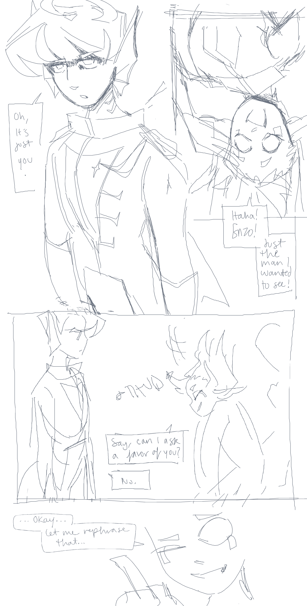

comic redraw
creation date: jan 12
characters featured: enzo, archer
an extended redraw of this old post from april 23'
this was the original sketch/thumbnail, not shown in the linked post
ouuugh this is such a 2023 page layout. it makes me feel really weird.
this is not a canon interaction btw, the original was made just for practice.
my artstyle from the previous april artworks weren't even bad, it was just THIS one that was scuffed and NEEDED a redo. the webtoon scroll influence on the redraw is STRONG. i think it flows better, but kinda just forces the reader to zoommm thru the text bubbles. everything else feels way better tho. i really like looking at this one agh.........